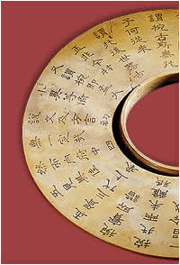

Writing
The Chinese use a very different writing system to English.
English words are made up of a collection of letters that each has its own sound. The Chinese use logograms - where a symbol represents a meaning or a word.

| Jade bi from Shang dynasty.
The inscription is from
the 18th century A.D. |
Good examples of logograms that you might use everyday are numbers. If you see '2' written, you know that it means 'two'. A French person looking at the same symbol would say it meant 'deux'.
The basic principles behind Chinese writing have remained unchanged for thousands of years. Each
character consists of a number of strokes or lines set inside an imaginary square. Thousands of bones from the Shang dynasty have been unearthed with writing on them. Many of the characters on these bones still exist (in a slightly altered state) today.
|